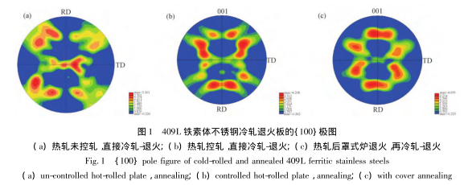
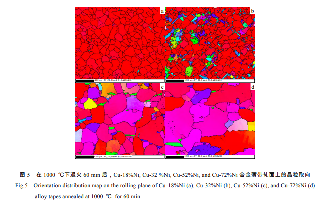
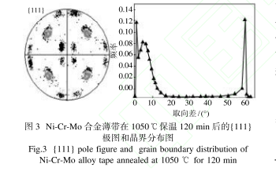
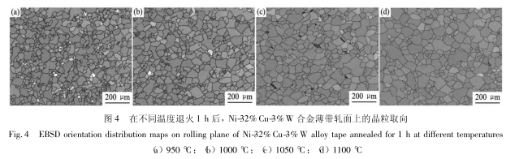
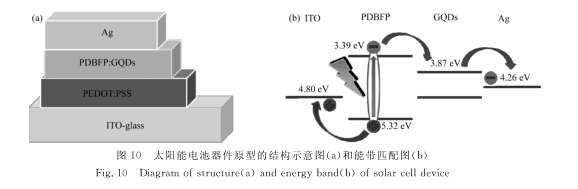

Y. He*, H. M. Jin, Y. L. Chu, J. C. Chen, Z. L. Zhang, H. C. Huang, J. A. Wang. Comparison of recrystallization texture and surface ridging of ferritic stainless steels. Transactions of Materials and Heat Treatment, 2017, 38 (2): 83-90

J. A. Wang, E. W. Liu, J. C. Chen, H. M. Wang, Z. L. Zhang, Y. He*. Effect of alloying elements on the formation of recrystallization texture of Cu-Ni alloy tapes. Rare Metal Materials and Engineering, 2016, 45 (11): 2975-2980

H. C. Huang, E. W. Liu, J. A. Wang, Z. Q. Zhang, Y. He*. Low Curie temperature cube textured Ni-Cr-Mo alloy tape and its property. Hot Working Technology, 2016, 45 (14): 1-5

J. A. Wang, E. W. Liu, Z. Q. Zhang, B. Lu, Y. He*. Recrystallization texture and properties of Ni-Cu-W alloy tape. Chinese Journal of Rare Metals, 2016, 40 (3): 221-226

J. J. Cai, Y. He*, X. N. Wang, Y. Cao, W. C. Liu, J. A. Wang. Synthesis and photovoltaic properties of new narrow gap polymer with DPP core. Journal of Functional Polymers, 2015, 28 (2): 136-146
